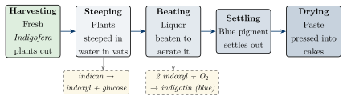

Chapter 11: Raṅga: Dyes, Mordants, Pigments and Inks¶
11.1 Dyeing as Chemistry¶
Dyeing cotton is chemically difficult. Most natural dyes do not bond to cellulose fibres by themselves; they wash out or fade. Indian dyers solved the problem with two techniques that they brought to a high level: vat dyeing with indigo, which depends on a reduction–oxidation cycle, and mordant dyeing, in which metal salts fixed to the fibre bind the dye and determine its colour. With these, combined with resists of wax, mud or tied thread, Indian craftsmen produced the fast, brilliantly coloured cottons—chintzes, calicoes, kalamkari, ajrakh, bandhani—that were traded across the Indian Ocean for centuries and, from the 17th century, transformed European taste (Riello 2013; Balfour-Paul 1998). This chapter is concerned with the chemistry; the textile traditions themselves are described in Volume 17, Śilpa–Kāru, and their trade in Volume 19, Vāṇijya and Samudra.
As with metallurgy, this was craft knowledge, held by dyers’, printers’ and painters’ communities and passed on within families. Sanskrit literature mentions dyes and dyed cloth, but the detailed knowledge of the processes comes mainly from the products themselves, from European observers of the 17th–19th centuries, who were trying to learn the secrets of Indian dyeing, and from surviving craft practice.
11.2 Cotton¶
The history of Indian dyeing is bound up with that of cotton. Mineralised cotton fibres preserved in the corrosion of a copper bead from Mehrgarh, of the 6th millennium BCE, are among the earliest evidence for the use of cotton anywhere, and the Harappans grew and wove cotton; fragments of cotton cloth survived at Mohenjo-daro in contact with a silver vessel. Cotton was domesticated independently in South Asia and in the Americas. Greek writers from Herodotus onwards knew of Indian “wool that grows on trees”, and Indian cotton cloth was a major export for some two thousand years (Riello 2013; Kenoyer 1998).
Cotton’s importance for chemistry is that it is hard to dye. Wool and silk, being protein fibres, take many dyes readily; cellulose does not. The mordanting and vat-dyeing techniques described in this chapter were developed above all to colour cotton fast, and their success was one reason why Indian cottons dominated world markets until the industrial revolution.
11.3 Indigo (Nīla)¶
11.3.1 The Plant and the Dye¶
Indigo is obtained in India mainly from Indigofera tinctoria (Sanskrit nīlī). The leaves do not contain the blue dye as such but a colourless compound, indican. When the leaves are steeped in water, indican is broken down to indoxyl; when the liquid is beaten to aerate it, indoxyl is oxidised to the insoluble blue pigment indigotin, which settles and is collected, pressed and dried into cakes (Figure 11.1). Similar blue dyes were obtained elsewhere from woad (Europe), from Polygonum and Strobilanthes (East and Southeast Asia) and from other plants; the oldest known indigo-dyed textiles come from Peru. What distinguished India was the scale and quality of its indigo production and its long role as an exporter (Balfour-Paul 1998).

11.3.2 The Indigo Vat¶
Indigotin is insoluble in water and cannot dye fibres directly. The dyer therefore reduces it, in an alkaline vat, to a soluble yellowish form (leuco-indigo, “indigo white”). Fibres immersed in the vat absorb leuco-indigo; on exposure to air it is oxidised back to blue indigotin, now trapped within the fibres:
Traditional vats were made alkaline with lime or plant ashes and reduced by fermentation, with additions such as molasses, bran or seeds that fed the bacteria responsible. Managing a fermentation vat requires close attention to its smell, colour and surface; dyers judged its condition by experience. Repeated dips build up deeper shades.
11.3.3 Indigo in Trade and Colonial History¶
The Periplus lists “Indian black” (indikon melan), generally taken to be indigo, among the exports of Barbarikon at the mouth of the Indus, and Roman writers knew indicum as a costly pigment (Casson 1989). The English word “indigo” derives, through Spanish or Portuguese and Latin, from Greek indikon, “Indian (substance)”. From the 16th century indigo from Gujarat and the Indo-Gangetic plain was exported to Europe in quantity, and it gradually displaced woad there. In the 17th century the most prized grades came from Bayana, near Agra, and from Sarkhej, near Ahmedabad; Dutch and English factors bought them in competition with Persian and Armenian merchants, and the Mughal state and nobility took a close interest in the trade. Later in the century Indian indigo for Europe faced competition from plantations in the Caribbean and the American colonies, and the centre of Indian production shifted to Bengal and Bihar.
From the late 18th century European planters, with East India Company support, organised indigo production in Bengal and Bihar, often by compelling peasants to grow indigo on unfavourable terms. Resistance culminated in the “Blue Mutiny” of 1859–1862 in Bengal (Kling 1966), and the grievances of indigo cultivators in Champaran (Bihar) were the occasion of Gandhi’s first campaign in India in 1917. Adolf von Baeyer’s research on the structure and synthesis of indigo (from the 1870s) led to its industrial synthesis, and from 1897 the German firm BASF marketed synthetic indigo, which within two decades largely destroyed the natural indigo trade (Balfour-Paul 1998).
11.4 Other Natural Dyes¶
The principal natural dyes used in India besides indigo are listed in Table 11.1.
| Dye | Sanskrit | Source | Colour | Main colorant |
|---|---|---|---|---|
| Indigo | nīlī | Indigofera tinctoria | Blue | Indigotin |
| Indian madder | mañjiṣṭhā | Rubia cordifolia root | Red | Purpurin, related anthraquinones |
| Chay root | — (Ta. cāyavēr) | Oldenlandia umbellata root | Red | Alizarin and related anthraquinones |
| Lac | lākṣā | Secretion of the lac insect (Kerria lacca) | Red, crimson | Laccaic acids |
| Safflower | kusumbha | Carthamus tinctorius flowers | Yellow, red | Carthamin |
| Turmeric | haridrā | Curcuma longa rhizome | Yellow (fugitive) | Curcumin |
| Kamala | kampillaka | Mallotus philippensis fruit hairs | Orange | Rottlerin and related compounds |
| Sappanwood | pattaṅga | Caesalpinia sappan wood | Red | Brazilin |
| Myrobalan, pomegranate rind | harītakī, dāḍima | Fruits and rind | Yellow, brown; black with iron | Tannins |
| Henna | — (Hi. mehndī) | Lawsonia inermis leaves | Orange-red | Lawsone |
Some dyes now associated with India are later introductions: annatto (Bixa orellana), for example, is an American plant brought to Asia after 1500.
11.5 Mordants¶
A mordant (from French mordre, “to bite”) is a metal salt that is fixed to the fibre and forms an insoluble complex (a “lake”) with the dye. With anthraquinone dyes such as madder, chay and lac, the metal of the mordant largely determines the colour: aluminium gives red, iron gives purple to black, and mixtures give intermediate shades. The mordants and auxiliaries used by Indian dyers are listed in Table 11.2.
| Agent | Indic names | Function |
|---|---|---|
| Alum | sphaṭikā, kāṅkṣī; Hi. phiṭkarī | Aluminium mordant: reds with madder, chay and lac |
| Iron | kāsīsa (ferrous sulphate); iron liquor from rusty iron and jaggery or sour gruel (Te. kasimi) | Iron mordant: purples and blacks; black outlines in kalamkari |
| Tannins | harītakī (myrobalan) and other barks and fruits | Pre-treatment of cotton, helping metal salts bind to it; black with iron |
| Alkalis | Plant ashes, lime, sajjī | Scouring cotton; alkaline indigo vats |
| Dung | — | Bleaching and clearing the ground of printed cloth |
The key technique of Indian cotton printing was to apply different mordants to different parts of the cloth—by pen, by block or under resist—and then to dye the whole cloth in a single red dye bath. Where alum had been applied the cloth turned red, where iron had been applied black or purple, and where there was no mordant the dye washed out in the subsequent clearing. Combined with indigo dyeing under a wax resist, this allowed multicoloured, wash-fast designs on cotton.
11.6 Resist and Mordant Techniques¶
Patterns were produced by keeping the dye or mordant away from parts of the cloth or yarn. In bandhani (tie-dyeing; Sanskrit bandha, “binding”) and ikat, thread bound tightly round the cloth or the yarn physically excludes the dye; in the double ikat of Patan (paṭolā) both warp and weft are resist-dyed before weaving. Pastes of wax, or of mud with gum and lime (the dabu of Bagru in Rajasthan), protect areas of cloth from the cold indigo vat, and wood blocks were used to print both resists and mordants, as in the ajrakh of Sindh and Kutch, printed on both sides of the cloth in a long sequence of resisting, mordanting, dyeing with indigo and madder, and washing. The regional traditions, their makers and their designs are described in Volume 17, Śilpa–Kāru; kalamkari is taken here as the best-documented example of the chemistry.
11.6.1 Kalamkari¶
Kalamkari (“pen-work”) is the hand-painted and printed mordant-dyed cotton of the Coromandel coast, the “chintz” of European trade. The two best-known centres today are Srikalahasti, where narrative temple cloths are drawn freehand, and Machilipatnam, where block printing is used. A simplified outline of the traditional sequence is given in Table 11.3.
| Stage | Process and chemical role |
|---|---|
| Preparation | Cotton scoured and treated with myrobalan (tannin) and milk, preparing it to take metal salts |
| Black outlines | Drawn with iron liquor, which reacts with the tannin to give black |
| Red areas | Alum mordant painted or printed where red is wanted |
| Red dyeing | Cloth boiled with chay root or madder; colour fixes where alum (red) and iron (black) are present |
| Blue areas | Areas not to be blue are covered with wax; cloth dipped in the indigo vat; wax removed |
| Further colours | Yellow (often fugitive) painted over blue for green, or over red for orange |
| Clearing | Repeated washing, dung baths and bleaching in the sun to whiten the ground |
Kalamkari demands precise control of many steps, and its products were highly prized. It is reasonable to call it one of the most sophisticated applications of practical chemistry in pre-industrial textile production. European observers, notably the French in Pondicherry in the 1730s, wrote detailed accounts of the process in order to imitate it (Riello 2013).
11.7 Indian Cottons and Europe¶
Indian dyed and printed cottons were traded across the Indian Ocean from early times—medieval Gujarati block-printed fragments survive at Fustat in Egypt—and from the 17th century the English and Dutch companies shipped them to Europe in huge quantities, provoking the French ban (1686–1759) and the English Calico Acts (1700, 1721). The trade and its protectionist response are treated in Volume 17, Śilpa–Kāru, and Volume 19, Vāṇijya and Samudra. For the history of chemistry the important consequence is that European printers set out to imitate Indian mordant methods, and the resulting industry of printed cottons was one of the foundations of the European chemical and textile industries (Riello 2013).
11.8 Red Dyes: Chay and Turkey Red¶
The brilliant, fast reds of Coromandel chintz depended on chay root (Oldenlandia umbellata), a small plant growing wild and cultivated in sandy coastal soils of the south-east. Its roots contain alizarin and related anthraquinones and give, on an alum mordant, a red that dyers and European buyers considered superior to that of madder. Chay was collected and cultivated by specialist communities, and its supply was a matter of concern to the European companies trading on the Coromandel coast; it was also exported. The particular qualities of Coromandel reds were often attributed by contemporaries to the water of particular places, a belief that reflects the dyers’ attention to the mineral content of water, which affects mordant dyeing.
11.8.1 Turkey Red¶
“Turkey red” was a brilliant, very fast red produced on cotton by a long and complex process in which the cloth was repeatedly treated with oil, alkali, dung and mordants before dyeing with madder. The process was practised in India and the Ottoman lands, reached France in the mid-18th century through Greek and Ottoman dyers, and then spread to Britain, where Glasgow became a major centre. Its chemistry—the formation of a complex of alizarin with aluminium and calcium in an oil-treated fibre—was only gradually understood. Turkey red is a good example of a process from the Indian Ocean world that European industry adopted and industrialised.
11.9 Dyers and Printers¶
Dyeing and printing were the hereditary work of specialised communities, Hindu and Muslim—rangrez dyers, chhīpā printers, the largely Muslim Khatri ajrakh printers of Kutch and Sindh, and the Hindu and Muslim kalamkari painters of the Coromandel coast—and women did much of the work, especially the tying of bandhani (see Volume 17, Śilpa–Kāru). Their knowledge of the behaviour of mordants, dyes, water, temperature and weather was empirical, closely guarded and never written down by the dyers themselves. When European companies and colonial officials sought to learn it, they did so by observing and questioning dyers; the resulting accounts, such as those from Pondicherry in the 18th century, are among the best sources for the techniques, but the dyers’ own perspective is largely absent from the written record (Riello 2013).
11.10 Lac¶
Lac (lākṣā) is the resinous secretion of the lac insect (Kerria lacca), which infests the branches of host trees such as kusum, palāśa and ber. The encrusted twigs (stick-lac) yield a water-soluble red dye, consisting of laccaic acids (anthraquinone compounds), and a resin, refined as shellac. Lac dye was used for textiles, leather and cosmetics (alaktaka, the red colour with which women painted their feet), and lac resin for lacquer, sealing wax, ornaments, varnishes and, from the late 19th century until the coming of vinyl, gramophone records. India has long been the world’s largest producer of lac.
11.11 Pigments and Cosmetics¶
Indian painters and cosmeticians used a range of mineral and organic pigments: red and yellow ochres, lamp-black, chalk and lime, orpiment (yellow arsenic sulphide), vermilion (red mercuric sulphide), red lead, lapis lazuli (imported ultramarine), indigo, lac and plant colours. Some of these, and their hazards, are listed in Table 11.4.
| Material | Indic name | Composition | Hazard |
|---|---|---|---|
| Vermilion | sindūra, hiṅgula | Mercuric sulphide (or, in modern products, often red lead or synthetic dyes) | Mercury; lead |
| Red lead | sindūra (in part) | Lead tetroxide | Lead |
| Orpiment | haritāla | Arsenic trisulphide | Arsenic |
| Kohl | añjana, kājal, surmā | Lamp-black in fat; or ground galena (lead sulphide) or stibnite | Lead (galena-based) |
| Alaktaka | alaktaka | Lac dye | — |
11.11.1 Pigments in Painting¶
Scientific study of Indian paintings has begun to identify the pigments painters actually used. The mural paintings of Ajanta (5th century CE) were painted on a ground of mud plaster and lime with earth pigments (red and yellow ochres, green earth), lamp-black, lime white and, for blue, lapis lazuli imported from Afghanistan. Later manuscript and album painters, especially at the Mughal and Rajput courts, used a wider range: vermilion, red lead, orpiment, indigo, lac, lapis, malachite and verdigris, lead white, gold and silver. Painters prepared their own colours, grinding minerals, washing and levigating them to separate the finest particles, and binding them with gum.
One pigment has a curious history. “Indian yellow” (peori), used in Rajput and Mughal painting and exported to Europe, was reported in 1883 by an Indian official, T. N. Mukharji, replying to an enquiry from Kew, to be made in Bihar from the urine of cows fed on mango leaves. The account has often been doubted, but laboratory analysis has shown that the pigment consists mainly of the magnesium salt of euxanthic acid, a compound formed in the animal body, which is consistent with Mukharji’s report of an animal source (Baer et al. 1986). Production is said to have ceased in the early 20th century, and the modern paints sold under the name are synthetic.
11.11.2 Ink and Writing Materials¶
The earliest Indian manuscripts were written on birch bark in the north-west and on palm leaf in most of the subcontinent, with inks made largely from lamp-black (carbon) bound with gums; in the palm-leaf tradition of the south and east, letters were often incised with a stylus and then rubbed with lamp-black. Paper-making reached India from the Islamic world and became established from about the 13th century, with Kashmir, Sialkot, Kalpi and other centres becoming famous for fine paper; the iron-gall inks of the Persianate tradition, and the damage they do to paper, are described in Section 13.7. Some of the painters’ pigments—orpiment, vermilion, lead white—were toxic, both to the painters who prepared them and to the manuscripts they eventually corroded.
Health and Safety Note
Several traditional pigments and cosmetics are toxic. Galena-based surmā and kohl and lead-based sindūr are recognised causes of lead poisoning, especially in young children, and health authorities in several countries have warned against them. Vermilion contains mercury and orpiment contains arsenic. Lamp-black kajal made without lead compounds does not carry the same risk, but commercial products should not be assumed to be lead-free.
11.12 Turmeric¶
Turmeric (haridrā) is a bright yellow dye for cotton and silk, but a fugitive one: it fades quickly in light and changes colour with alkali. It was therefore used mainly where brilliance mattered more than permanence—ritual cloths, cosmetics, food—and, in combination with indigo, for greens. Its colouring compound, curcumin, has been intensively studied for possible pharmacological effects, with mostly disappointing results in clinical trials; these modern investigations should not be read back as “validating” traditional uses.
11.13 The End and Revival of Natural Dyeing¶
William Henry Perkin’s synthesis of mauve (1856), the industrial synthesis of alizarin (1869) and that of indigo (1897) transformed the dye industry. Within a few decades synthetic dyes had largely replaced natural ones in India as elsewhere, with devastating effects on indigo cultivators and on many dyers (Balfour-Paul 1998).
Since the later 20th century there has been a revival of natural dyeing, encouraged by craft organisations, designers and the market for handmade textiles, and by concern over the pollution caused by synthetic dyeing. Several Indian dyed textile traditions—among them Pochampally ikat, the kalamkari of Srikalahasti and Machilipatnam, Bagh prints, Sanganeri block printing and Patan paṭolā—are registered as Geographical Indications. Natural dyeing is not automatically “green”: mordants and dyeing effluents also need careful handling, and the demand for land and water for dye plants is considerable. Its value lies in the skills and designs it preserves as well as in its environmental advantages.
What Is Secure and What Is Debated
Secure: the chemistry of the indigo vat and of mordant dyeing with alum and iron, and the sequence of operations in kalamkari; the scale of the indigo and cotton trades and the coercion of the colonial indigo system; and the toxicity of lead- and mercury-based pigments and cosmetics. Debated: when mordant dyeing of cotton began; how far European printers learned directly from Indian practice; and the origins of particular reds and of pigments such as Indian yellow.